Estas son las primeras cuatro semanas del currículum que damos en el dojo, adaptadas a la sala de tu casa. Elige la edad de tu hijo, sigue las sesiones en orden y ve marcando cada técnica cuando la practiquen. Cada una trae el video exacto del movimiento.
Duración
4 semanas
Cada sesión
35–40 min
Necesitas
Compañero
Videos
36 técnicas
◆ Primero: elige la edad de tu hijo ◆
Puedes cambiarla después. Cada edad tiene su propio curso y su propio avance.
El plan
Una lección a la vez. Marca cada técnica cuando la practiquen y el curso te lleva a la siguiente. Tu avance se guarda en este dispositivo.
Esto no es una lista de ejercicios sueltos: es el mismo mapa que seguimos en el dojo. Cada semana tiene dos sesiones y cada sesión tres técnicas encadenadas — una posición, la respuesta del que está debajo, y la respuesta a esa respuesta. Conviene hacerlas en orden.
El compañero puede ser papá, mamá, un hermano o un primo. Si es un adulto, el adulto es el muñeco: no compite, se deja mover y solo corrige. La mitad del aprendizaje está en sentir el peso de alguien más grande y descubrir que sí se puede salir.
El piso
Alfombra, tapete de yoga, cobijas dobladas o pasto. Nunca sobre loseta, cemento o cerca de una mesa. Retiren lo que esté a menos de dos metros.
El tap manda
Dos golpecitos con la mano en el compañero o en el piso significan «me detengo ya». Se suelta al instante, sin preguntar. Quien no suelta, no juega.
Atrapa y suelta
Las llaves de la Semana 4 se aseguran, se aguantan y se sueltan cuando un adulto cuenta hasta dos. La presión la decide el adulto que mira, nunca el niño.
El ritmo
10 minutos de calentamiento, 20 de técnica, 10 de juego. Si se alarga porque se están divirtiendo, perfecto. Si el niño se aburre, se corta y se retoma otro día.
Prohibido, siempre
Nada de golpes, patadas, empujones ni azotar al compañero contra el piso.
Nada de llaves a las piernas, torceduras de rodilla ni presiones al cuello con las manos.
Las estrangulaciones (mata león, Semana 3 de la pista de 10–12) solo con un adulto mirando cada repetición, aplicadas en tres segundos, y se suelta a la primera señal.
Nada de saltar sobre el compañero ni caerle encima con el peso completo.
Si alguien dice «para», se para. No importa si fue en serio o de juego.
Si duele una articulación, se termina la sesión ahí. No se «aguanta».
Lección 1 de 8Día 1
Semana 1
Montada y control lateral: aguantar y escapar
Las dos posiciones más importantes del jiu jitsu, y cómo salir de cada una. Antes de empezar: enseña el tap. Dos golpecitos con la mano en el compañero o en el piso significan «me detengo ya». El tap nunca se discute.
CalentamientoCalentamiento (10 min): circuito de animales — oso, cangrejo, saltos de rana, foca. 40 segundos cada uno. Termina con 3 minutos de puentes y camarones cruzando la sala.
0 de 3 técnicas marcadas
Ver · Kids BJJ White Belt — Mount Control · Absolute MMAVer en YouTube ↗
Inicio: Arriba, sentado sobre el estómago de tu compañero.
Las rodillas aprietan las costillas; los pies se enganchan bajo sus muslos (ganchos de uva).
Cadera baja y pesada, tu pecho sobre su pecho.
Cuando te empuje hacia arriba, camina las rodillas hacia sus axilas.
Cuando haga puente, pon las dos manos en el piso arriba de su cabeza y aguanta.
«Sé una cobija pesada, no una piedra.» El peso va en la cadera, no en las manos.
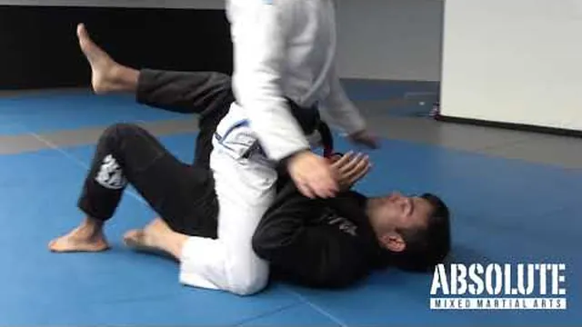
Ver · Kids BJJ Grey Belt #3 — Bridge and Roll · Absolute MVer en YouTube ↗
Inicio: Abajo, con el compañero en montada.
Atrapa un brazo: agarra su muñeca y jálala a tu pecho. No empujes.
Atrapa el pie del mismo lado con tu pie.
Planta los dos pies y haz puente con la cadera hacia el techo.
Rueda por encima del hombro del lado atrapado y cae arriba, dentro de sus piernas.
«Atrapa el brazo, atrapa el pie, puente al cielo.»
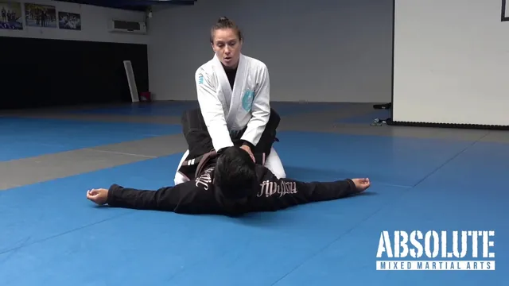
Ver · Kids BJJ — Closed Guard Posture (Top) · Absolute MMAVer en YouTube ↗
Inicio: Arriba, dentro de la guardia cerrada, justo después del upa.
Él cruza los tobillos detrás de tu espalda; tú te sientas derecho, cabeza arriba.
Manos en su pecho o en sus bíceps, codos adentro.
Rodillas abiertas para tener base.
Si te jalan la cabeza, empuja el pecho y vuelve a sentarte derecho.
«Cabeza arriba, espalda derecha, como una jirafa.»
Lección 2 de 8Día 2
Semana 1
Montada y control lateral: aguantar y escapar
CalentamientoCalentamiento (10 min): carriles ninja — camarón hacia adelante y hacia atrás, rodada al frente, rodada atrás, levantada técnica.
0 de 3 técnicas marcadas
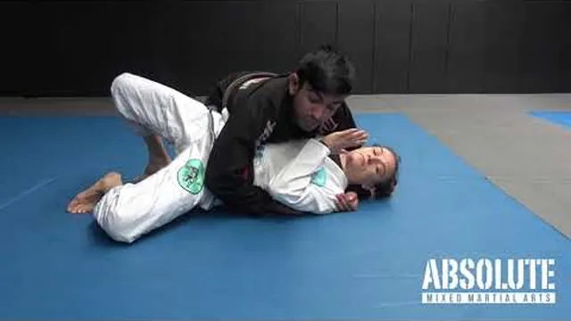
Ver · Kids BJJ White Belt — Side Control · Absolute MMAVer en YouTube ↗
Inicio: Arriba, tu pecho cruzado sobre su pecho.
Pecho con pecho, cadera baja, los dedos de los pies empujando el piso.
Brazo cercano por debajo de su cabeza; brazo lejano bloqueando su cadera.
Codo y rodilla cierran los huecos contra su cuerpo.
Sigue su movimiento: cuando gire hacia ti, deja caer el peso.
«Que no entre luz entre los dos cuerpos.»
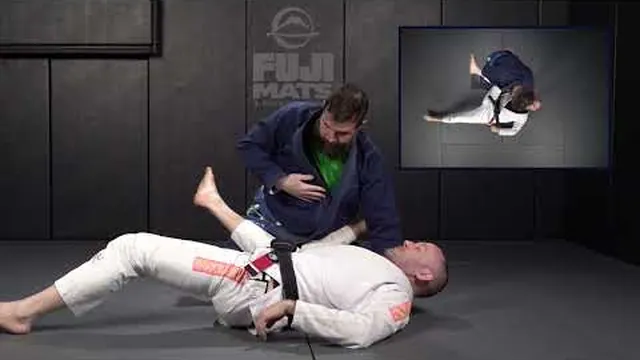
Ver · Shrimp Reguard from Side Control · Utopia Martial ArVer en YouTube ↗
Inicio: Abajo, con el compañero en control lateral.
Marco: antebrazo en su cuello, la otra mano en su cadera.
Planta el pie cerca de su cadera, puente pequeño y luego camarón alejando la cadera.
Mete la rodilla cercana cruzando su estómago.
Rodea con las dos piernas → guardia cerrada.
«Empuja, camarón, rodilla adentro.» El marco hace el espacio; la rodilla lo conserva.
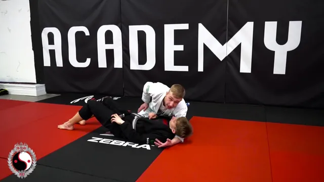
Ver · Side Control to Mount Transition · Satori BJJVer en YouTube ↗
Inicio: Arriba; el compañero empieza el camarón.
Mantén el brazo bajo su cabeza bien apretado.
Bloquea su cadera cercana con tu rodilla.
Desliza la rodilla lejana cruzando su estómago hasta el otro lado.
Siéntate en montada y engancha los pies.
«Panza con panza, rodilla cruzando.»
Juego de cierreRey de la montaña: el de arriba aguanta la montada 30 segundos, el de abajo escapa con el upa. Cambian. 1 punto por aguantar, 1 punto por escapar.
Lección 3 de 8Día 1
Semana 2
La guardia cerrada: barrer desde abajo, pasar desde arriba
Estar abajo no es estar perdiendo. Esta semana la guardia se vuelve una posición de ataque, y el de arriba aprende a pararse y pasar.
CalentamientoCalentamiento (10 min): tiburones y peces — los peces cruzan la sala en camarón, el tiburón los toca; el tocado hace sprawl y se vuelve tiburón.
0 de 3 técnicas marcadas
Ver · Kids BJJ — Closed Guard Posture (Bottom) · Absolute Ver en YouTube ↗
Inicio: Abajo, guardia cerrada.
Agarre de nuca: mano detrás de su cabeza, jala hacia abajo mientras jalas con las piernas.
La otra mano controla una muñeca.
Mueve tu cadera fuera de la línea central; nunca te quedes plano.
Cuando su cabeza baje, abrázala contra tu pecho.
«Jalan las piernas, jala la mano, gira la cadera.»
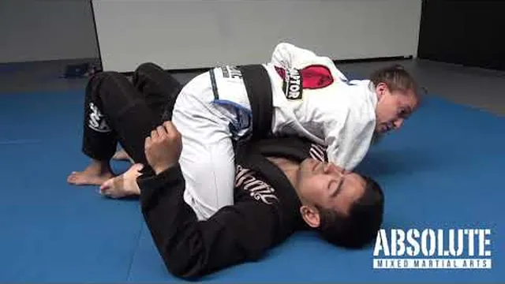
Ver · Kids BJJ Grey Belt — Hip Bump Sweep · Absolute MMAVer en YouTube ↗
Inicio: Abajo; el compañero se vuelve a sentar derecho.
Abre la guardia, siéntate sobre un codo y luego apoya la mano atrás de ti.
El otro brazo pasa por encima de su hombro.
Sube la cadera y métela en su axila, como si te pararas de lado.
Síguelo al voltearse: la rodilla cruza y caes en montada.
«Siéntate, cadera a la axila, síguelo.» No te vuelvas a acostar.
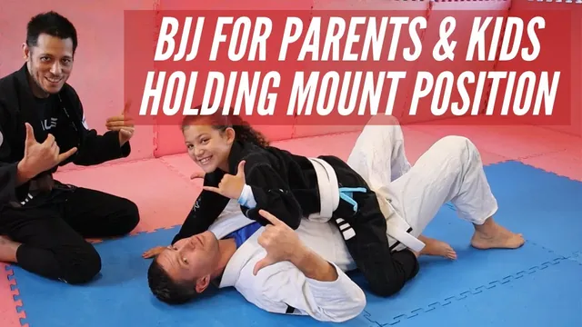
Ver · BJJ for Parents and Kids — Holding Mount · The AgogeVer en YouTube ↗
Libera el brazo que usaste para barrer; manos al piso si hace puente.
El compañero hace puente 3 veces; tú apoyas y te quedas.
Sube las rodillas si empuja tu pecho.
«Cae como gato y luego sé una cobija.»
Lección 4 de 8Día 2
Semana 2
La guardia cerrada: barrer desde abajo, pasar desde arriba
CalentamientoCalentamiento (10 min): colas de dragón — una tira de tela metida atrás en el short; roba colas y cuida la tuya.
0 de 3 técnicas marcadas
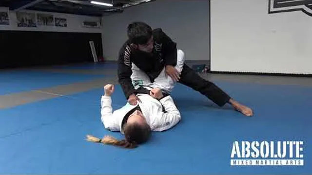
Ver · Kids BJJ Grey Belt — Closed Guard Opener · Absolute Ver en YouTube ↗
Inicio: Arriba, dentro de la guardia cerrada.
Postura arriba, manos en su pecho o bíceps.
Sube un pie junto a su cadera, luego el otro: párate con las rodillas flexionadas.
Pon una rodilla en su coxis y empuja hacia abajo su rodilla cruzada para abrir.
Sujeta sus espinillas para que no trepe por tus piernas.
«Párate como surfista, rodilla en el coxis.»
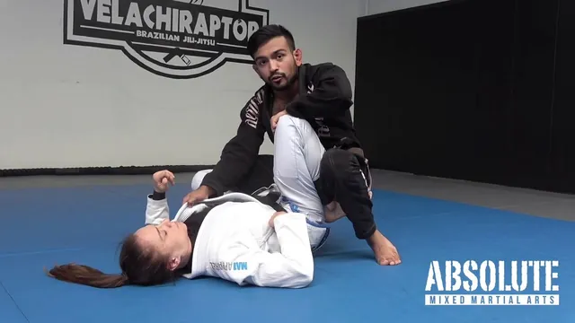
Ver · Kids BJJ — Knee Slice Pass · Absolute MMAVer en YouTube ↗
Inicio: Arriba, guardia abierta, sujetando una pierna.
Desliza la rodilla cercana cruzando su muslo hacia el piso.
Cabeza abajo, brazo por debajo de su cabeza mientras te deslizas.
Libera la pierna de atrás, cadera plana al piso.
Acomódate en control lateral: cien kilos.
«Rodilla cruzando el muslo, cabeza bajo su cabeza.»
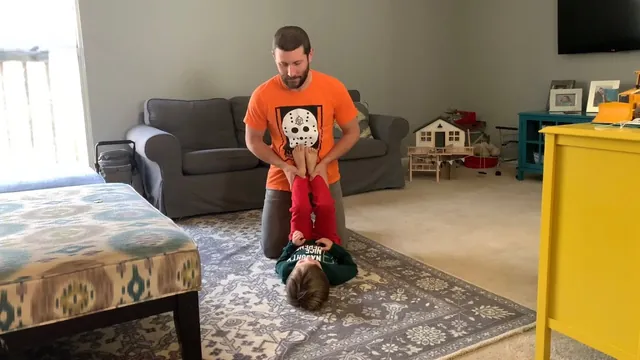
Ver · Guard Retention Drills for Parents and Kids · Kogen Ver en YouTube ↗
Inicio: Abajo; el compañero empieza el pase de rodilla.
Marco en su hombro y en su cadera mientras la rodilla se desliza.
Camarón alejando la cadera de la rodilla que entra.
Regresa la rodilla libre entre los dos cuerpos como escudo.
Vuelve a cerrar la guardia, o queda con los pies en sus caderas.
«Marco, camarón, rodilla adentro: tu rodilla es el escudo.»
Juego de cierreBarre o abre: el de abajo anota si barre y queda arriba; el de arriba anota si abre la guardia y mete una rodilla. Rondas de 45 segundos.
Lección 5 de 8Día 1
Semana 3
Control de espalda: la mochila
La posición favorita de los niños. Esta semana solo la posición y el escape — todavía sin estrangulaciones.
CalentamientoCalentamiento (10 min): «sensei dice» con movimientos de jiu jitsu — camarón, sprawl, puente, levantada técnica, base de combate.
0 de 3 técnicas marcadas
Ver · Kids BJJ Yellow Belt — Chair Sit to Back · Absolute Ver en YouTube ↗
Inicio: Arriba en control lateral; el de abajo se voltea a sus rodillas.
Cuando se voltee, mantén el pecho pegado a su espalda.
Brazo por encima del hombro, brazo por debajo de la axila: cinturón de seguridad, manos unidas en su pecho.
Mete el pie cercano dentro de su muslo (primer gancho).
Ruédalo sobre tu cadera y mete el segundo gancho.
«Él se voltea, tú lo sigues; nunca dejes que la espalda se enfríe.»
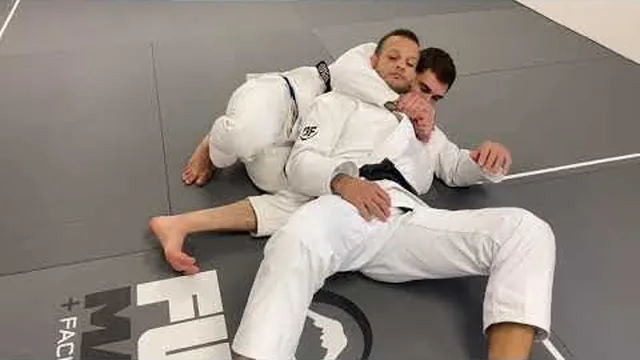
Ver · Backpack Challenge! Back Control game · Jiu-Jitsu FoVer en YouTube ↗
Inicio: Arriba, los dos ganchos puestos y el cinturón cerrado.
Pecho pegado a su espalda, cabeza junto a la suya del lado del brazo de abajo.
Ganchos: pies dentro de los muslos, talones ligeros. Nunca cruces los tobillos.
Si gira hacia tu brazo de abajo, síguelo y quédate encima de la cadera.
Si se sienta, siéntate con él.
«Como una mochila: pecho pegado, pies enganchados.»
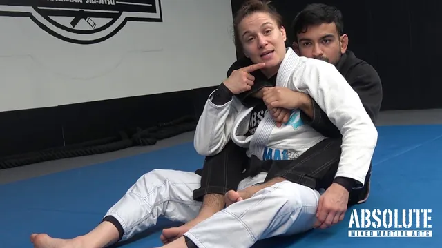
Ver · Kids BJJ Grey Belt — Back Escape 1 · Absolute MMAVer en YouTube ↗
Inicio: Abajo; el compañero tiene control de espalda.
Dos manos en el brazo que pasa sobre tu hombro; jálalo hacia abajo.
Desliza la cadera hacia abajo y hacia el lado de ese brazo.
Pon la espalda plana en el piso, hombros abajo.
Mete la rodilla y gira hacia él → guardia.
«Dos manos en un brazo, deslízate al piso.»
Lección 6 de 8Día 2
Semana 3
Control de espalda: la mochila
CalentamientoCalentamiento (10 min): relevos — oso de ida, camarón de regreso, rodadas de ida, cangrejo de regreso.
0 de 3 técnicas marcadas
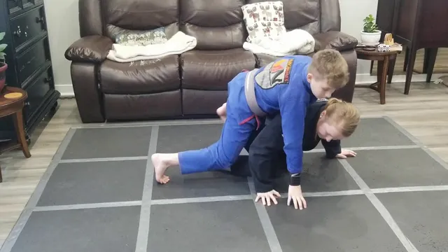
Ver · How to Take The Back From Turtle · Jiu Jitsu KidVer en YouTube ↗
Inicio: El compañero en manos y rodillas; tú de rodillas a su lado.
Pecho sobre su espalda, rodilla pegada a su cadera.
Brazo por encima del hombro, brazo por debajo de la axila: une las manos en su pecho.
Cabeza baja, del lado del brazo de abajo.
Jálalo a tu regazo: siéntate sobre la cadera de ese mismo lado.
«Cinturón puesto, siéntate en tu cadera.»
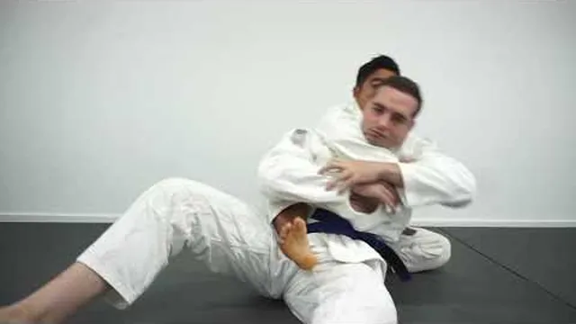
Ver · Kids BJJ — Mount to Back Take with Hooks · Stronger Ver en YouTube ↗
Inicio: Arriba, con cinturón, el compañero en tu regazo.
Primer gancho: la pierna del lado al que te sentaste entra en su muslo.
Segundo gancho: mete la otra pierna.
Si te quita un gancho, vuelve a poner el otro antes de perseguir.
Si rueda por encima de ti, sigue la rodada y conserva el cinturón.
«Un gancho es seguro, dos ganchos es tu casa.»
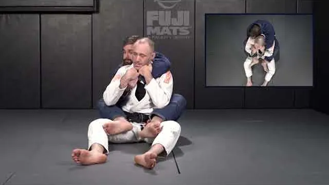
Ver · Back Escape — BJJ for Kids · Utopia Martial ArtsVer en YouTube ↗
Inicio: Abajo; el compañero tiene ganchos y cinturón y no quiere soltar.
Barbilla abajo, dos manos en el brazo que pasa sobre el hombro.
Desliza la cadera hacia ese lado y pega la espalda al piso.
Patea el gancho de ese lado con tu pierna.
Gira hacia él, rodilla cruzando → guardia.
«Primero barbilla abajo, luego deslízate.»
Juego de cierreLa mochila: el de arriba mantiene los ganchos 30 segundos; el de abajo quita ganchos y sale. Sin estrangulaciones esta semana.
Lección 7 de 8Día 1
Semana 4
Primera sumisión: la americana, con la regla de atrapa y suelta
Las sumisiones llegan con una sola regla: la aseguras, aguantas, un adulto cuenta hasta dos y sueltas. La presión la decide el adulto que está mirando, nunca el niño.
CalentamientoCalentamiento (10 min): toca rodillas — en base de combate, toca las rodillas de tu compañero; 3 toques gana. Después de pie, solo con las manos.
0 de 3 técnicas marcadas
Ver · Isolate their arm from Mount · Less Impressed More IVer en YouTube ↗
Inicio: Arriba en montada; el compañero empuja tu pecho.
Cuando empuje, agarra una muñeca con las dos manos.
Fija la muñeca al piso junto a su cabeza, con su codo doblado a 90°.
Mantén la cadera pesada; no te levantes.
Tu codo baja junto a su oreja para que no pueda sentarse.
«Fija la muñeca como una estampa.»
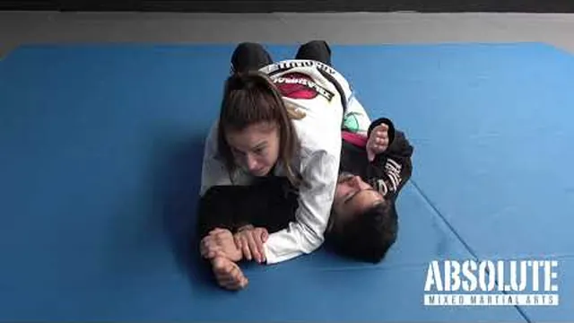
Ver · Kids BJJ Grey Belt — Americana from Mount · AbsoluteVer en YouTube ↗
Inicio: Arriba, con la muñeca fijada junto a su cabeza.
Tu otra mano pasa por debajo de su codo y agarra tu propia muñeca (figura cuatro).
Mantén su muñeca en el piso; desliza su codo hacia su cadera como si pintaras el piso.
Detente en el momento del tap. Un adulto cuenta 1–2 → suelta.
Los dos lados, 5 repeticiones lentas cada uno.
«Pinta el piso, lento como miel.»
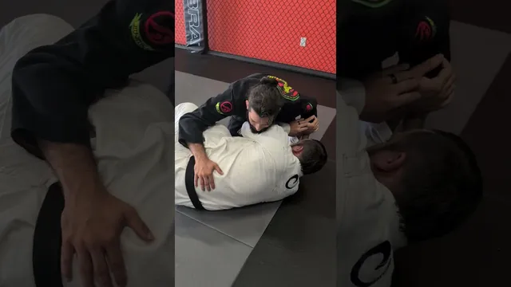
Ver · Kids BJJ — Americana Escape · Wolfpack MMA WylieVer en YouTube ↗
Inicio: Abajo; el compañero fijó tu muñeca.
Voltea el pulgar hacia arriba y jala el codo hacia tus costillas.
Agarra tu propia playera o tu bíceps con la mano atrapada.
Puente hacia el lado atrapado para quitarle la base.
Si ya está cerrada y se mueve: da tap temprano.
«Pulgar arriba, codo a casa.»
Lección 8 de 8Día 2
Semana 4
Primera sumisión: la americana, con la regla de atrapa y suelta
CalentamientoCalentamiento (10 min): carriles ninja con carriles nuevos — sit-out y giro de cadera.
0 de 3 técnicas marcadas
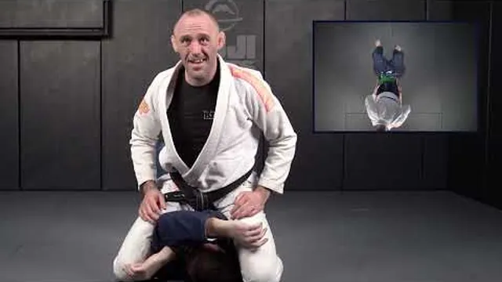
Ver · High Mount Control — BJJ for Kids · Utopia Martial AVer en YouTube ↗
Inicio: Arriba en montada; el compañero hace marcos en tu pecho.
Cuando empuje, camina las rodillas hasta debajo de sus axilas.
Los codos pellizcan sus brazos por encima de su cabeza.
Cadera pesada; si hace puente, manos al piso.
Desde aquí los brazos son fáciles de aislar.
«Sube cuando empuje.»
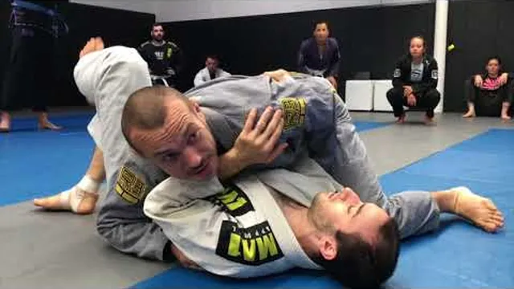
Ver · Side control to mount, mount to side control · AbsolVer en YouTube ↗
Inicio: Arriba; el compañero se voltea de lado.
Suelta la montada; pasa la pierna por encima de su cadera.
Pecho sobre su pecho, brazo bajo su cabeza, rodilla bloqueando la cadera.
Acomoda los cien kilos.
Su brazo con el que gira casi siempre ya está doblado: míralo.
«No pelees el giro, súbete a él.»
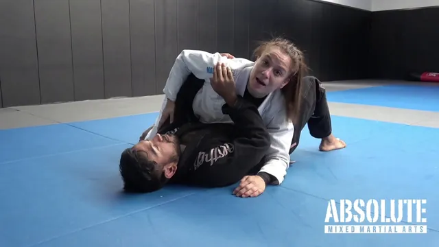
Ver · Kids BJJ — Americana from Side Control · Absolute MMVer en YouTube ↗
Inicio: Arriba en control lateral, con su brazo lejano doblado.
Fija su muñeca lejana al piso con tu mano cercana.
Desliza el otro brazo por debajo de su codo y agarra tu muñeca.
Pecho pesado; pinta el piso con su codo.
Detente en el tap. Cuenta → suelta.
«Misma llave, otra puerta.»
Juego de cierreAtrapa y suelta desde montada: un punto por atrapar y soltar bien, un punto por escapar. Rondas de 30 segundos.
Lección 1 de 8Día 1
Semana 1
Montada y control lateral, con dos escapes de cada una
Mismo mapa que los pequeños, pero con la segunda respuesta: cuando un escape falla, el otro cubre la falla.
CalentamientoCalentamiento (12 min): circuito de animales más flujo — oso → sprawl → sit-out → levantada técnica, cruzando la sala.
0 de 3 técnicas marcadas
Ver · Home BJJ Kids Tutorial — Top Mount Control · Marcos Ver en YouTube ↗
Inicio: Arriba, montada.
Montada baja: ganchos de uva, cadera pesada, pecho bajo.
Cuando empuje tu pecho, camina las rodillas a las axilas (montada alta).
Cuando haga puente: manos al piso, cadera otra vez abajo.
Cabeza baja; los codos pellizcan sus brazos.
«Empuja = sube. Puente = apoya.»
Ver · Kids BJJ Grey Belt #3 — Bridge and Roll · Absolute MVer en YouTube ↗
Inicio: Abajo; el compañero en montada baja.
Atrapa el brazo (muñeca a tu pecho) y el pie del mismo lado.
Pies cerca de tu cadera; puente recto hacia arriba.
Rueda por encima del hombro del lado atrapado, con el brazo atrapado.
Cae en guardia cerrada, postura arriba.
«Atrapa, puente, rueda por el hombro.»
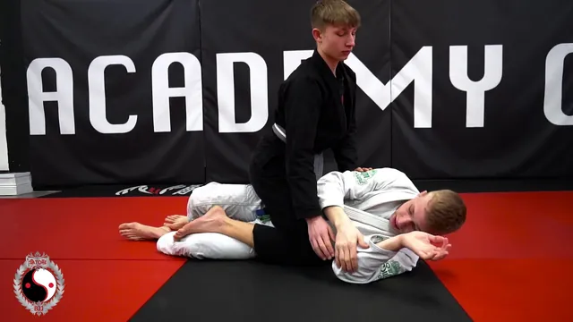
Ver · Knee-Elbow Mount Escape for Kids · Satori BJJVer en YouTube ↗
Inicio: Abajo; el compañero apoya la mano en el piso y el upa ya no funciona.
Marco: antebrazo en su cadera, la otra mano en su rodilla.
Camarón alejando la cadera del lado del marco.
Mete la rodilla entre los dos cuerpos como cuña.
Saca el pie y recupera la guardia.
«Marco, camarón, rodilla adentro.»
Lección 2 de 8Día 2
Semana 1
Montada y control lateral, con dos escapes de cada una
Ver · Kids' Class — Top Side Control · The Martial ArVer en YouTube ↗
Inicio: Arriba, pecho cruzado sobre su pecho.
Brazo cercano bajo su cabeza (cruzado de cara), jala su barbilla lejos de ti.
Brazo lejano bajo su axila lejana (underhook) o bloqueando la cadera.
Cadera baja, rodilla pegada a su cadera, dedos de los pies empujando.
Transición: desliza la rodilla a montada cuando empuje.
«El cruzado de cara gira su cabeza, el underhook mata el marco.»
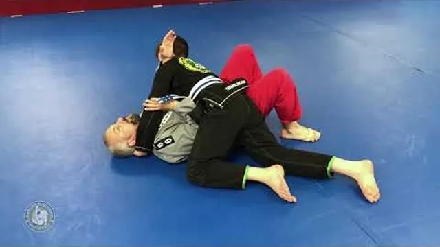
Ver · Kids Hack 56 — Frames for the Shrimp Escape · CarlosVer en YouTube ↗
Inicio: Abajo; el compañero en control lateral.
Marcos: un antebrazo cruzando el cuello, el otro en la cadera.
Puente pequeño, camarón alejándote, los marcos firmes.
Rodilla cruzando el estómago, los pies encuentran sus caderas.
Recupera la guardia.
«Primero los marcos, luego la cadera.»
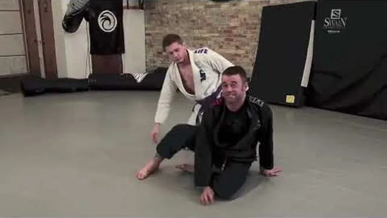
Ver · Side Control Escape — Thread the Needle · Utopia MarVer en YouTube ↗
Inicio: Abajo; el cruzado de cara pesa demasiado para el camarón.
Puente hacia él y gira hacia él hasta tus rodillas.
Consigue el underhook al girar; cabeza del lado de su pecho.
Empuja hacia adelante, agarra una pierna o levántate.
Llega arriba o reinicia de pie.
«Si no puedes alejarte, atraviesa.»
Juego de cierreEscapa o mantén: el de arriba aguanta 3 segundos en control lateral o llega a montada; el de abajo recupera guardia o llega a sus rodillas. Rondas de 30 segundos.
Lección 3 de 8Día 1
Semana 2
Guardia cerrada: barrer a montada, pasar a control lateral
El golpe de cadera con su continuación — cuando apoya la mano, ese brazo es un regalo. Y desde arriba, postura y pase de rodilla.
CalentamientoCalentamiento (12 min): tiburones y peces (versión sprawl), luego 2 minutos de puentes sostenidos.
0 de 3 técnicas marcadas
Ver · Breaking Posture in Closed Guard · JonThomasBJJVer en YouTube ↗
Inicio: Abajo, guardia cerrada.
El agarre de nuca jala la cabeza; control de muñeca del otro lado.
Cadera fuera del centro; rodillas apretando.
Cuando se siente derecho para arreglar la postura, abre el espacio para el golpe.
Conserva el agarre de muñeca: lo vas a necesitar.
«Cabeza abajo, muñeca mía.»
Ver · Kids BJJ Grey Belt — Hip Bump Sweep · Absolute MMAVer en YouTube ↗
Inicio: Abajo; el compañero sentado derecho.
Abre, siéntate sobre el codo, apoya la mano.
Cadera a la axila; brazo sobre su hombro.
Síguelo al voltearse → montada.
El compañero apoya la mano para detenerla: eso abre la técnica siguiente.
«Siéntate, apoya, golpea.»
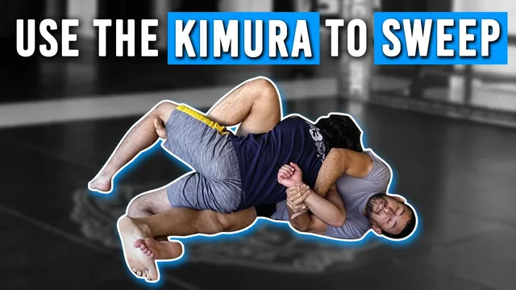
Ver · Kimura Sweep from Closed Guard · William AbreuVer en YouTube ↗
Inicio: Abajo; el compañero apoyó la mano en el piso.
Agarra la muñeca apoyada; el otro brazo pasa sobre su hombro y por abajo para agarrar tu propia muñeca (figura cuatro).
Déjate caer al lado del agarre, cadera arriba.
Él rueda: cae en montada conservando el agarre.
Sin final esta semana. La llave se termina la semana 4.
«Mano apoyada = agarre de kimura.»
Lección 4 de 8Día 2
Semana 2
Guardia cerrada: barrer a montada, pasar a control lateral
CalentamientoCalentamiento (12 min): colas de dragón; después «pummel» en pareja buscando el underhook, rondas de 30 segundos.
0 de 3 técnicas marcadas
Ver · Kids BJJ Grey Belt — Closed Guard Opener · Absolute Ver en YouTube ↗
Inicio: Arriba, guardia cerrada.
Postura, manos en caderas o bíceps, sube un pie y luego el otro.
Rodilla en el coxis, empuja su rodilla para abrir.
Agarra la espinilla, cabeza arriba.
Nunca lo levantes del piso.
«Postura de surfista, rodilla en el coxis.»
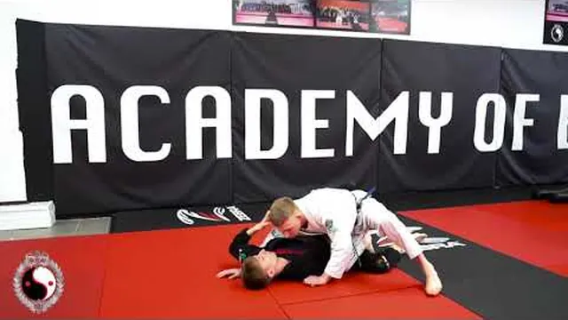
Ver · Kids BJJ — Knee Slide Pass · Satori BJJVer en YouTube ↗
Inicio: Arriba, guardia abierta.
Rodilla cruzando el muslo, cadera baja.
Cruzado de cara bajo su cabeza; fija su brazo lejano con tu cuerpo.
Desliza la rodilla de atrás, cadera al piso.
Control lateral, pecho pesado.
«Rodilla, cruzado, desliza.»
Ver · Guard Retention Drills for Parents and Kids · Kogen Ver en YouTube ↗
Inicio: Abajo; el compañero desliza la rodilla.
Marco en hombro y cadera antes de que llegue el cruzado de cara.
Camarón alejándote de la rodilla; la rodilla escudo regresa.
Pies a las caderas; recupera guardia o siéntate.
Practica: pasa → retiene → pasa, 2 minutos seguidos.
«Marco, camarón, escudo.»
Juego de cierreBarre o abre: el de abajo barre; el de arriba abre y pasa. Rondas de 60 segundos.
Lección 5 de 8Día 1
Semana 3
Control de espalda: ganchos, cinturón, mata león y el escape
La posición con la que más ganan los niños. Primero la posición, luego la estrangulación aplicada en tres segundos con tap a la primera presión, y al final el escape. Esta semana necesita a un adulto mirando cada repetición.
CalentamientoCalentamiento (12 min): «sensei dice» con posiciones; luego «paseo en la espalda» — ganchos puestos, el compañero gatea y tú te quedas arriba.
0 de 3 técnicas marcadas
Ver · Kids BJJ Yellow Belt — Chair Sit to Back · Absolute Ver en YouTube ↗
Inicio: Arriba; el compañero se voltea.
Pecho pegado a su espalda mientras gira.
Cinturón: brazo sobre el hombro, brazo bajo la axila, manos unidas.
Siéntate en la cadera del lado del brazo de abajo, gancho cercano adentro.
Segundo gancho.
«Él se voltea, tú lo sigues.»
Ver · Backpack Challenge! Back Control game · Jiu-Jitsu FoVer en YouTube ↗
Inicio: Arriba, los dos ganchos puestos.
Cabeza del lado del brazo de abajo; pecho pegado.
Ganchos dentro de los muslos, nunca cruzados.
Si gira hacia tu brazo de abajo, cae hacia ese lado y quédate en la cadera.
Pelea de manos: mantén la mano del brazo de arriba alta, cerca de su cuello.
«Pecho pegado, pies enganchados, cae al lado que estrangula.»
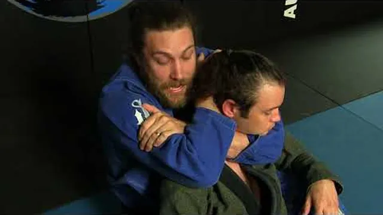
Ver · Gracie Jiu Jitsu for Kids — Rear Naked Choke · GraciVer en YouTube ↗
Inicio: Arriba, control de espalda. Con un adulto mirando cada repetición.
El brazo de arriba se desliza bajo la barbilla; el codo alineado con la barbilla.
Esa mano agarra tu otro bíceps; la otra mano va detrás de su cabeza.
Aprieta despacio en 3 segundos. El compañero da tap a la primera presión; sueltas de inmediato.
5 repeticiones por lado, un adulto viendo cada una.
«Codo bajo la barbilla, aprieta como cerrar una puerta despacio.»
Lección 6 de 8Día 2
Semana 3
Control de espalda: ganchos, cinturón, mata león y el escape
Juego de cierreLa mochila, ronda 2: el de abajo tiene que usar el escape para anotar; el de arriba anota si retoma la espalda.
Lección 7 de 8Día 1
Semana 4
Ataques desde montada: americana y palanca, con sus defensas
Dos llaves de articulación seguras y la defensa de cada una. Atrapa y suelta durante todo el mes: se asegura, se aguanta, un adulto cuenta y se suelta.
CalentamientoCalentamiento (12 min): toca rodillas de pie y en base de combate; luego «cacería de brazo» — fija una muñeca al piso, el compañero la libera.
0 de 3 técnicas marcadas
Ver · Isolate their arm from Mount · Less Impressed More IVer en YouTube ↗
Inicio: Arriba, montada; el compañero empuja.
Agarra la muñeca que empuja con las dos manos y fíjala junto a su cabeza.
El codo baja junto a su oreja.
Cadera pesada; pecho bajo.
La otra mano lista para pasar bajo su codo.
«Fíjala como una estampa.»
Ver · Kids BJJ Grey Belt — Americana from Mount · AbsoluteVer en YouTube ↗
Inicio: Arriba, con la muñeca fijada.
Figura cuatro: la mano bajo su codo agarra tu muñeca.
Mantén la muñeca en el piso; desliza el codo hacia la cadera.
Despacio; detente en el tap; un adulto cuenta 1–2; suelta.
Defensa desde abajo: pulgar arriba, codo a las costillas, puente.
«Pinta el piso.»
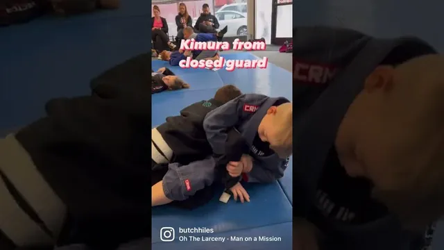
Ver · Kids do a kimura from closed guard · Butch Hiles BJJVer en YouTube ↗
Inicio: Abajo; el compañero apoya la mano — la entrada de la semana 2.
Figura cuatro sobre el brazo apoyado, muñeca hacia su espalda.
Saca la cadera hacia el lado del agarre; pierna sobre su espalda.
Gira el brazo despacio hacia su espalda; detente en el tap.
Cuenta, suelta. Si rueda: cae en montada con el agarre.
«Mismo agarre, puerta opuesta.»
Lección 8 de 8Día 2
Semana 4
Ataques desde montada: americana y palanca, con sus defensas
CalentamientoCalentamiento (12 min): tiburones y peces.
0 de 3 técnicas marcadas
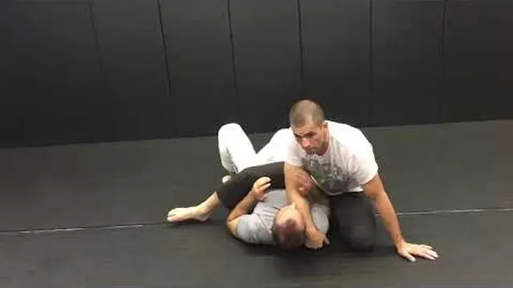
Ver · Kid's BJJ — How to S Mount from Top Mount · DusVer en YouTube ↗
Inicio: Arriba, montada alta.
Aísla un brazo: abrázalo contra el pecho.
La rodilla del lado abrazado se desliza a su oreja.
La otra rodilla sube detrás de su cabeza (montada en S), cadera pesada.
Mano en el piso junto a su cabeza para el equilibrio.
«Rodilla a la oreja, siéntate en su hombro.»
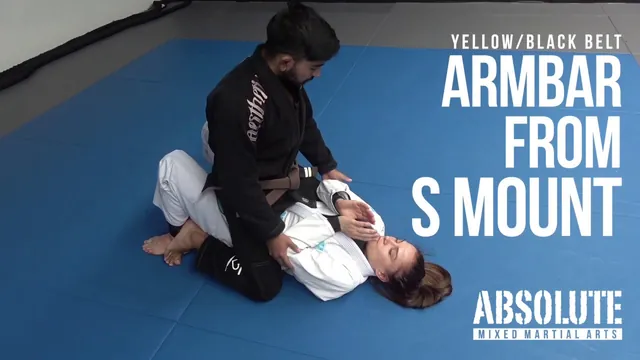
Ver · Kids BJJ — Armbar from S Mount · Absolute MMAVer en YouTube ↗
Inicio: Arriba, montada en S.
Pasa la pierna por encima de su cabeza, pie plano junto a la oreja.
Siéntate hacia atrás despacio, rodillas juntas, cadera en su hombro.
Pulgar arriba; sube la cadera con suavidad; detente en el tap; cuenta; suelta.
Los dos lados.
«Sentada lenta, rodillas pegadas.»
Ver · Kids BJJ — Americana Escape · Wolfpack MMA WylieVer en YouTube ↗
Inicio: El de abajo se defiende; el de arriba se adapta.
Abajo: dobla el brazo, agarra tu playera, gira hacia él hasta tus rodillas.
Arriba: antes de que gire, vuelve a montada.
El brazo doblado queda fijado → americana, cuenta, suelta.
Juego de cierreRey de la montaña con las dos sumisiones permitidas, siempre con atrapa y suelta. Rondas de 45 segundos.
Al terminarEl siguiente paso
Después de estas cuatro semanas
Si terminaron el mes, su hijo ya tiene lo que en el dojo llamamos el ciclo completo: sabe aguantar arriba, sabe salir de abajo y sabe qué hacer cuando el compañero se voltea.
Lo que sigue no se puede hacer en la sala: rolar con niños de su edad y su tamaño, con un coach corrigiendo en el momento. Ahí es donde el jiu jitsu deja de ser un ejercicio y se vuelve un deporte.
Clase
Días
Horario
Coach
Jiu Jitsu niños 7–9 años
Lunes, martes y jueves
16:00 – 17:00
Arturo
Jiu Jitsu juveniles 10–12 años
Martes y jueves
17:30 – 18:30
Arturo
Judo niños
Miércoles
16:30 – 17:30
Tal
¿Seguimos en el tatami?
Escríbenos y te decimos qué grupo le toca a tu hijo, qué necesita para su primer día y cómo son las primeras semanas. Si van dos o más hijos, pregunta por el plan familiar.
◆ Becas disponibles ◆Si el precio es el problema, dilo sin pena. Tenemos opciones.
Primera sesión hecha
Ya entrenaron en casa
Eso ya es más de lo que hace la mayoría de la gente que dice que quiere empezar. Si alguna técnica no les salió, grábenla en video y mándennosla: Arturo la ve y te dice qué corregir. Sin costo, sin compromiso.
Tu hijo ya sabe aguantar la montada, salir de ella y qué hacer en control lateral. En el dojo eso son dos semanas de clase. ¿Quieres que te digamos en qué grupo entraría por su edad?
Lo que viene —barridas, pases, y sobre todo rolar— necesita a alguien de su edad y su tamaño que no se deje. Es la única parte del jiu jitsu que no se puede practicar con papá en la alfombra.
Ya llevan control de espalda, que es la posición con la que más ganan los niños. Si quieren, pasen a ver una clase antes de terminar la guía: sin inscribirse, solo a mirar cómo es el grupo.
Su hijo ya tiene el ciclo completo: aguanta arriba, sale de abajo, y sabe qué hacer cuando el compañero se voltea. Eso es más de lo que sabe mucha gente después de un semestre.
Lo que sigue solo pasa en el tatami. Escríbenos y te decimos qué grupo le toca, qué necesita el primer día, y cómo funciona el plan familiar si va más de un hijo.
Tu avance se guarda solo en este teléfono. Si cambias de teléfono o borras el
navegador, se pierde. Mándate tu enlace por WhatsApp y podrás continuar desde donde te quedaste,
en cualquier aparato.
El Dojo · Huizaches 22, San Mateo Acatitlán, Valle de Bravo Mapa ·
eldojo.mx ·
WhatsApp